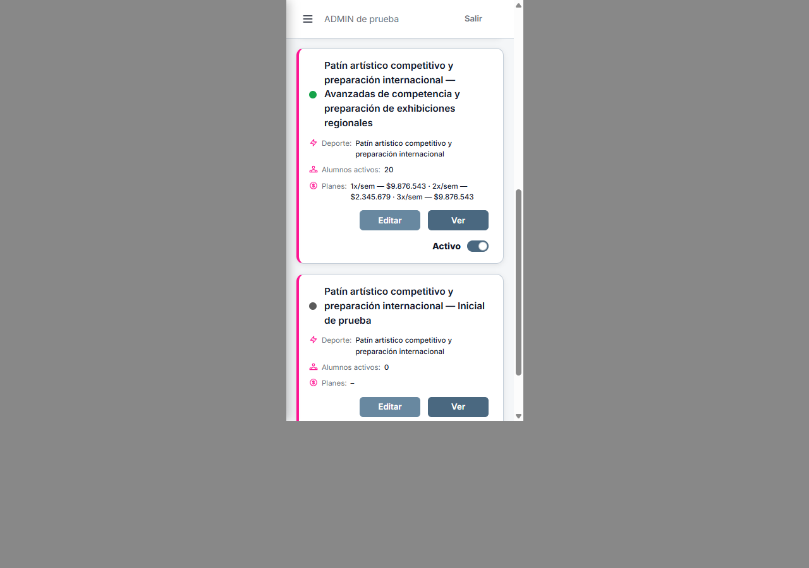
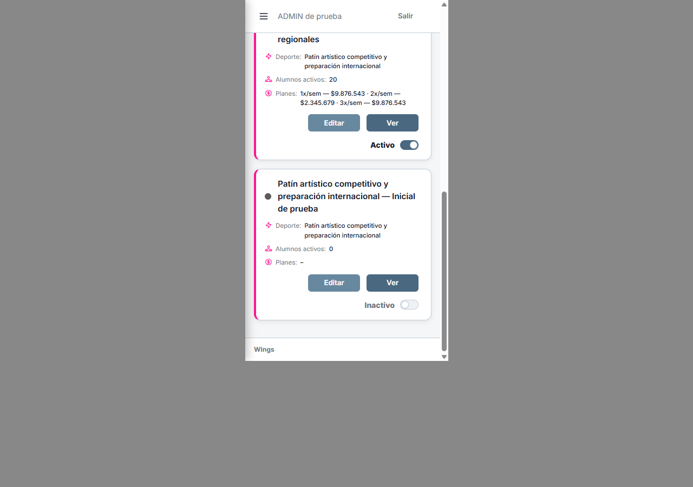
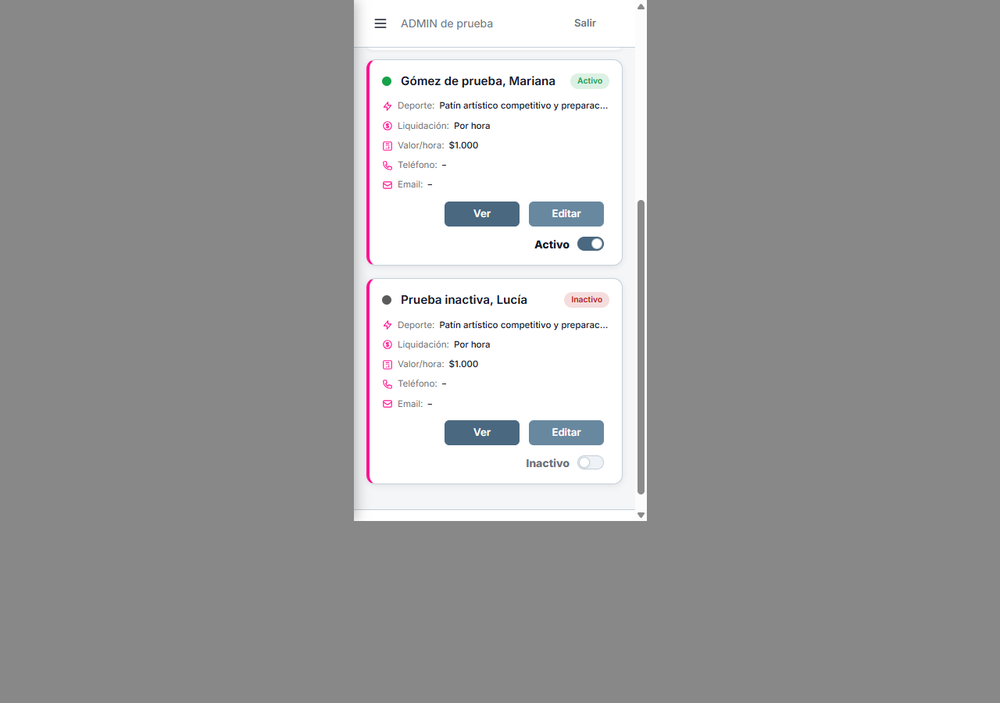
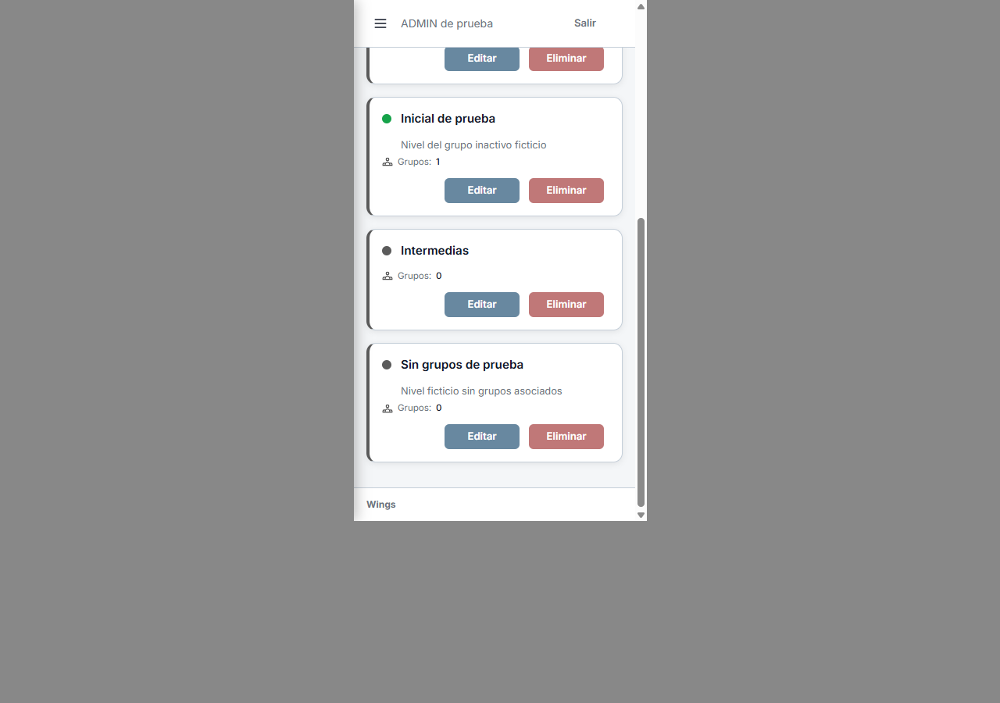
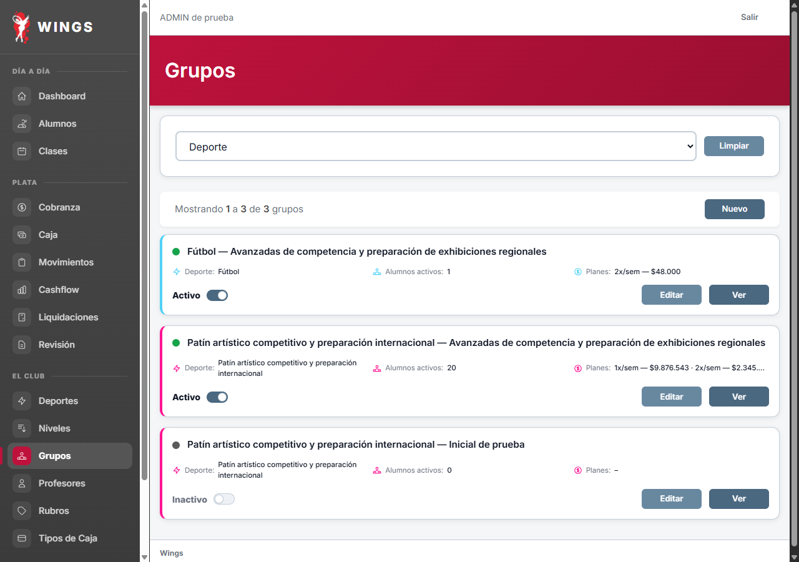
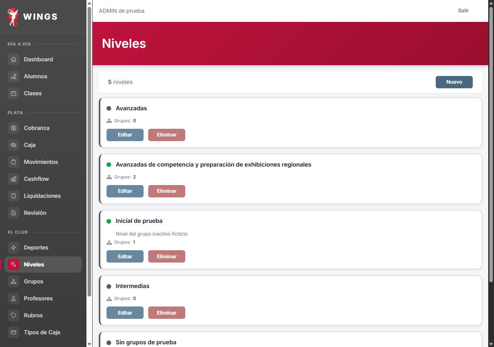
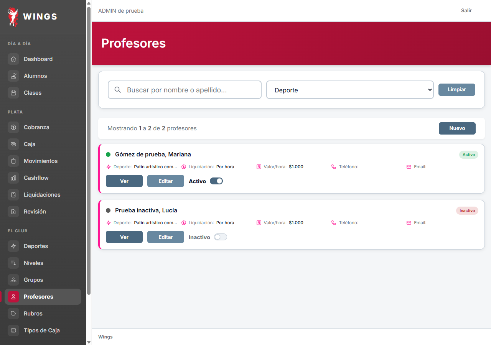

A9 · Botones e interruptor
Aprobación explícita confirmada por Carlos: «Perfecto, APROBADO A-9 Entonces», 08/10/2026.
Chequeado 08/10: Nuevo y último botón de tarjeta coinciden exactamente en x=224–320 en Grupos, Niveles y Profesores. Interruptores también terminan en x=320. Mediciones nuevas de las tres pantallas. Condición de aprobación de Carlos cumplida.
Celular: botones en una misma fila, alineados a derecha; interruptor debajo a derecha. Mismos tamaños. Escritorio conserva sus posiciones. Los puntos de A8 ya fueron aprobados.



Niveles · solo botones, sin interruptor

Escritorio · imágenes idénticas al antes del ajuste móvil
Grupos

Niveles

Profesores

Grupos completo · Niveles completo · Profesores completo · Mediciones y huellas
08/10/2026 · Laravel real · marco móvil 375×667 · base ficticia wings_testing_codex. Resultado local pendiente de verificación independiente.